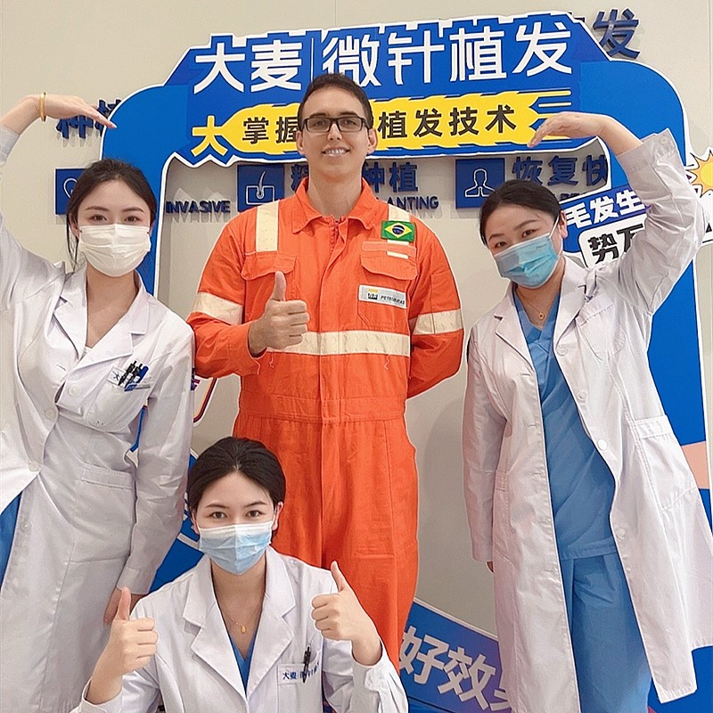

帶您一步步了解完整的毛囊移植過程

從初次諮詢到最終效果，大麥微針植髮醫院全程陪伴您。我們的植髮流程經過18年精煉，已超過10萬次成功案例，為每位患者帶來最佳效果。了解每個階段，讓您清楚知道會發生什麼，並從您的植髮體驗中獲得最大效益。
結合中西方最佳植髮標準的大麥微針植髮醫院
詳細了解植髮手術的每個階段
植髮旅程的每個階段
完整評估與客製化方案
打造完美髮際線與覆蓋範圍
為您手術當天做好所有準備
進行植髮手術
術後護理與專業指導
癒合、落髮期與新髮生長
完整植髮效果時間軸
新髮開始長出並逐漸生長
達到明顯的植髮效果
植髮效果完全成熟
持續追蹤確保長期效果
保持頭髮的最佳狀態
重拾自信與持久效果
業界領先 效果保證
自2006年以來，微創植髮技術的先驅與領導者
遍佈各大城市，統一的高標準醫療品質
創新的微創萃取與植髮筆技術，帶來卓越效果
全球患者信賴，帶來改變人生的植髮效果
為國際患者提供全程雙語專業支援
最先進的醫療設施與嚴格的安全規範，讓您安心植髮
看看我們患者令人驚艷的植髮效果


記錄滿意患者的美好時刻

開心展示自然植髮效果的滿意患者

感激地慶祝驚人轉變的患者

自豪展示全新自然髮際線的患者

展示驚人植髮轉變旅程的患者

對植髮效果感到滿意的海外患者

展示全新自然頭髮的開心患者

對醫療團隊滿意的患者

展示成功植髮重建的患者
來自全球滿意患者的真實評價
在Google查到植髮步驟說明！大麥的植髮手術流程很清楚，植髮前要準備什麼都詳細告知，植髮恢復期也很順利！
植髮前要準備什麼？大麥的植髮步驟說明超詳細！植髮手術流程專業，植髮恢復期比我想像中快很多！
植髮步驟說明很清楚！植髮手術流程從諮詢到恢復都有專人指導，植髮前要準備什麼都說明了，超安心！
在Bing搜尋植髮恢復期和植髮步驟說明！大麥的植髮手術流程很透明，植髮前要準備什麼都有詳細指引！
植髮前要準備什麼？大麥的植髮步驟說明超清楚！植髮手術流程順利，植髮恢復期很短，效果超讚！
植髮手術流程從開始到結束都很完美！植髮步驟說明詳細，植髮恢復期按月逐步改善，效果自然！
體驗我們現代化且舒適的醫療空間

最先進的醫療設施

優質休閒空間

無菌環境與先進設備

私密且專業的空間

舒適的術後空間

溫馨的入口空間
了解植髮手術常見問題解答
聯絡我們獲取免費諮詢評估
15810155700
+86 13730143529
hairtransplant@qq.com